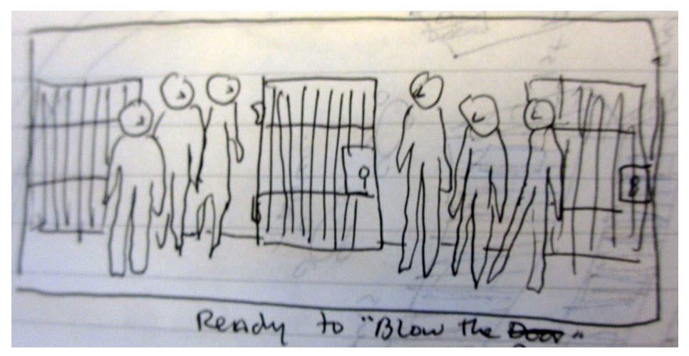
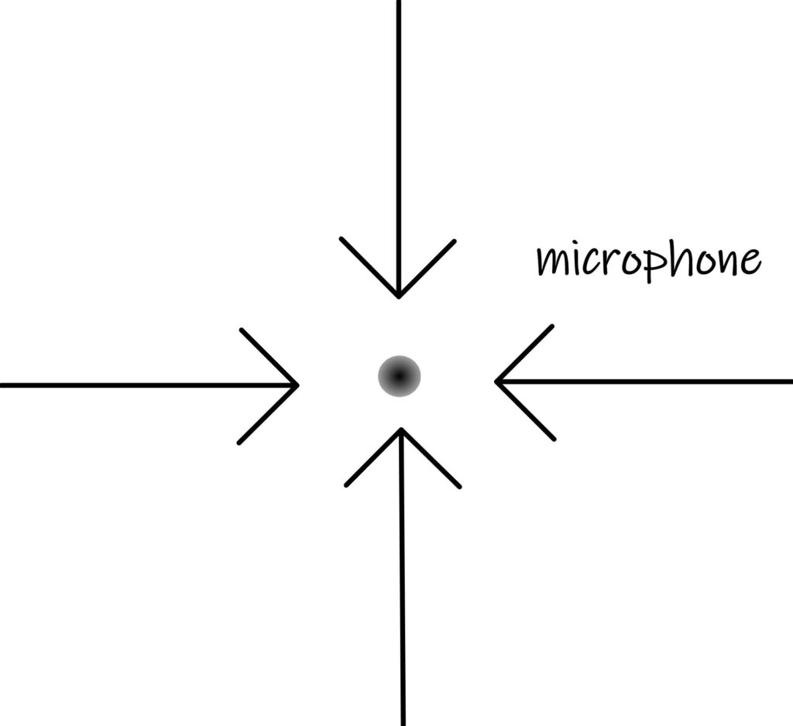
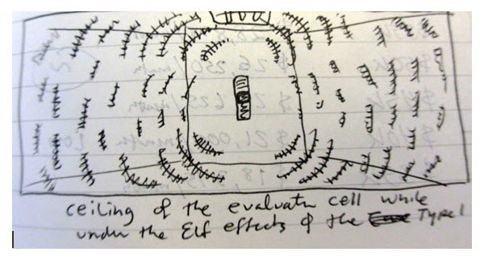
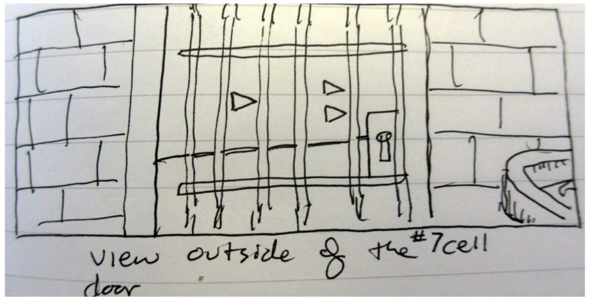
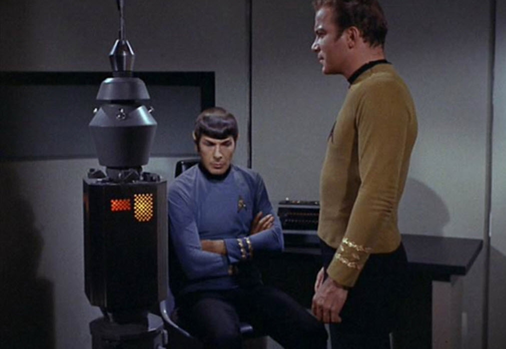
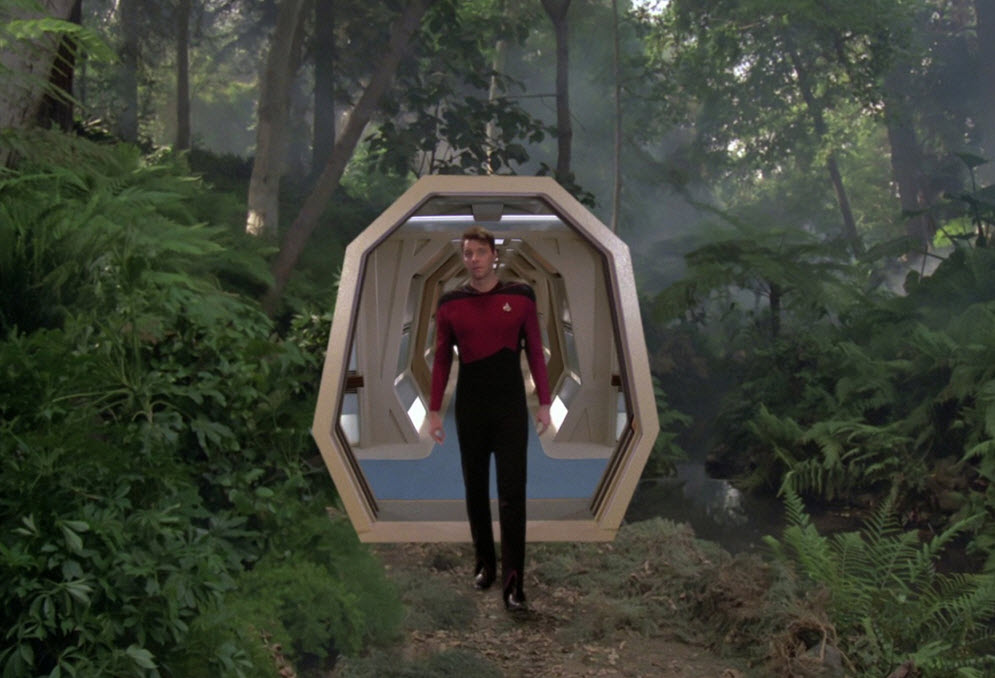

This is probably my worst article / post on MM. But it is something that I have to get off my system, and preserve. Thus I present it as is, all in it's own terrible ratty configuration. If life gives you lemons, you make lemonade.
This post / article discusses what my deactivation procedure was like from my point of view. To an outside observer, I was either lying on the bed thrashing about, or just acting strangely. I will do my best to give the reader a full understanding and the full scope of the experience.
These fuckers had to be shut off. You just don’t deactivate a MAJestic operative without shutting them down. That’s a fact jack.
It’s a difficult thing to relate, and even harder to describe. It also tends to get rather strange at times. But this is what happened. And it is here, recorded for prosperity.
Time to change your switch to "off".
My deactivation absolutely required that my probes be mothballed.
This was not an easy task, and it required that I be placed in a secure facility, and treated in a special manner .
This section discusses this procedure in the only way that I know how; from the point of view of the person being deactivated. Because of that, it is confusing and can be misunderstood easily. The reader is reminded that everything that happened is as described from my point of view.
To an outside observer, I was bat-shit crazy.
“Some are born mad, some achieve madness, and some have madness thrust upon 'em.” ― Emilie Autumn, The Asylum for Wayward Victorian Girls
From what I know now, this procedure is very straight forward from the point of view of an outside observer. As such, I will try my best to describe it as such. But in truth, it was anything but easy. This was my mind that they were dealing with. And my perceptions, thoughts, feelings, and memories were involved. Our experiences are colored by all these things, and thus when they are being tampered with, we have a tendency to become disoriented and confused.
Some basic clarification
I was implanted with three groups / clusters of probes.. As a reminder, I was injected with two (x2) “kits” of devices at NAS NASC Pensacola, Florida. And then afterwards I went through a dimensional portal to another place. It was another location and involved another species. That is where I obtained my EBP device.
In total;
- EBP – Alien manufacture, and installation.
- ELF Kit #1 – MAJestic “kit”. Basic.
- ELF Kit #2 – MAJestic “kit”. Advanced with special functions.
Core Kit I probes activated
This process was akin to “waking me up from a long slumber”. Because while I was actively aware of my role during the operation of the Core Core Kit #2 probes, I had forgotten everything related to and concerning the Core Core Kit #1 probes.
I knew, but didn't know. My memories were all very remote and empty. It was like when you opened the door to your house two days before Easter ten years ago. You remember it, but it isn't an "active" memory
To shut me off, and deactivate me, the core Core Kit #1 probes had to be reactivated, and from there, shut down manually, once the Core #2 kit was reset.
There was no easy way to do it.
For over 30 years had passed since I was last active under the probes effects. The physical probes had naturally migrated out of their initial set locations, and I needed to be re-calibrated, and engaged for the new locations of the probes. (In other words, what was once located at the far left of the upper part of my brain, has now moved diagonally towards the back and a little bit to the mid-center.) How to do this was not clean or pleasant.
For me it was hell.
“She’ll be coming around the mountain when she comes… She’ll be coming around the mountain when she comes… She’ll be riding six white horses. She’ll be riding six white horses. When she comes…” -Old Susanna
It began at lights out.
The lights usually shut down at 11:00 pm, but for some reason, the lights out period started at 9:00 pm. And we all settled down to rest. I tried to rest. As I settled down, everything got still and quiet. I started to drift off to sleep. My brain waves went from Alpha waves, to beta waves. My mind started to quiet down. It was quiet, and peaceful. But just as I began to drift into sleep; into theta waves, I was suddenly jerked up wide awake.
Someone, another inmate perhaps, started singing. This singing was loud and garish. He sang one old song from the days of the California Gold Rush. He sang “Old Susanna”. He wouldn’t let up. After a full five minutes of this, I was wide awake. And, he mercifully stopped.
The California Gold Rush (1848–1855) began on January 24, 1848, when gold was found by James W. Marshall at Sutter's Mill in Coloma, California. "Oh! Susanna" is a minstrel song by Stephen Foster (1826–1864), first published in 1848. It is among the most popular American songs ever written.
I began to rest again.
And again, as soon as I started to rest and drift off into theta brain wave activity, I was suddenly shaken wide awake. It was the other man singing “Old Susanna”. Again this singing continued for about ten more minutes and then stopped. I was now wide awake. Tired. Grouchy, and irritable. I tried to go back to sleep.
I began to rest again.
And again, no sooner as I started to rest and drift off into theta brain wave activity, I was suddenly shaken wide awake. Again, I listened to the crisp old tune of “Old Susanna”. Again this singing continued for about ten more minutes and then stopped. I stayed wide awake. I stayed tired. I continued to be grouchy, and irritable. Yet, still, I tried to go back to sleep.
The entire night continued like this.
Each time, as the night wore on, I got angrier and angrier.
Now, what one must understand is that I was chosen for the program for my ability to control my emotions. Though my wife might disagree with this appraisal, it was true that I could take a large amount of abuse before I would lash out. So even though I was terribly tired and exhausted, I didn’t do anything about it. I just took the abuse in silence.
Until about at around 4:00 am something snapped.
I snapped into a “state”
I cannot relate the exact mechanics of what transpired.
It reached a point of emotional turmoil, and mental confusion through the accumulation of pressure and the lack of sleep. In any event, at some point in time, my body and mind just snapped. That is the best way that I can describe it.
A feeling of warmth came over me, and I became lucid. I was no longer sleepy, but alert, calm, and entirely pissed.
Pissed, as in "pissed off" and absolutely furiously angry.
I was frosty calm and pissed off in a way that defies description.
I did not at all have a full recall of my Core Core Kit #1 memories. But I did have a recall of specialized training that I picked up somewhere (?).
And that came out in a flood of reactive autonomous movements and gestures. I found myself exercising and limbering up. I immediately went into some old martial arts training that I had taken years ago, and I started to organize all my gear. I made a mental count of everything I owned and this inventory was used for an automatic survival, evasion and escape routine that somehow I had access to.
(How and where did I get this training? I do not recall.)
Now, in case the reader gets confused, it needs to be clearly pointed out that I did not have any kind of formalized military combat training aside from what I experienced in the Navy at NAS NASC Pensacola.
Well, mostly that is…
Aside from one or two specialized para-military training camps in Louisiana. But I put this information here as a full disclosure of my apparent skill sets.I was there because of a"project" that I was involved in. <redacted> Just because I had cursory training as a “Swamp Rat” did not make me a professional military fighter or combat soldier. I only had the most rudimentary training in these fields. I was a technical nerd who’s experiences, for the most part, were devoid of any such experiences.
This was a meager amount.
When you watch television and movies, the heroes all have a great deal of skill and experience with knife fighting, martial arts, weaponry and high duration endurance. That is fine for the movies, but I was not trained as a navy SEAL, or a member of DELTA team.
I was more or less a highly technical individual, who through an array of events ended up in this program. I was not, am not, nor will I ever be a combat fighter. Yet, for some reason, this persona; a persona of just such a swarthy fellow, took hold of my very being.
I became that person.
How, and why, I have no idea.
I started to act… peculiarly.
All of this was not my personality.
At least nothing that I would associate with myself for the last three decades.
What was most astounding was that I started yelling in Chinese. Now, today, my Chinese linguistic skills are much better than then. But one must understand that, at that time, I couldn’t tell the difference from between a pair of shoes from a carrot in Chinese. I possessed absolutely zero Chinese linguistic skill.
But yet, I found myself shouting in Chinese. I started to implore the guards for information. I started to ask them what was going on. I did so in Mandarin Chinese!
你为什么这样做呢？我在哪里？做了什么我做错了？
Not that anyone else knew what I was saying. But, for some reason, my automatic reaction; one that I am loathe to recall here, kicked in. It involved a number of automatic behaviors that I automatically started to adopt.
These included a [1] calm composure, [2] the ability to think and reason in certain defined patterns, [3] the ability to speak in Chinese, and [4] the knowledge of what to do and how to handle the circumstances that came before me. It was almost like I was programmed to react in a certain manner under a certain series of events or circumstances.
This concluded until about 6:00 am.
When I finally was able to rest. At that time, the staff surrounding my cell and barracks also shut down and left for home. As they gathered their papers, books and possessions, they commented about the night. They complained about the costs, but also commented as to how unique the experience was.
They were curious about me, and they wanted to find out more as to what I was involved in. They joked about the event, saying to the effect that that was certainly strange and weird. That it was unexpected that I would know and speak Chinese, but that proved that something that they were told was correct. They stated that they would keep me under special care and evaluation until the team arrived from Washington to finish the work.
For me, however, everything was different.
I turned into someone different.
Now, I was someone else. I was like a robot. In truth, I was in-between activation’s. Neither my core Core Kit #1 nor my Core Core Kit #2 probes were apparently activated. But somehow, through stress and situations they were able to induce upon me some kind of repressed reactive persona.
This was unexpected by everyone.
It was certainly unexpected by me.
I had no idea that this stuff was locked away inside my head. It was surprising to the staff at the prison as well. While the doctor and the authorities were apparently told that I would have to be handled in a certain special way, they didn’t believe that anything would actually, really occur. They thought that it would be just nonsense. But sure as the day is bright, the manuals were correct and I snapped into a secondary persona. One that was not to be trifled with.
At this point in time, I was in a “survival” and “protective” persona. (I found myself walking with “direct registering” and operating in a most observant manner. )
Direct Registering Walking like a feline in a specific prescribed manner designed for silence and readiness. Felines walk in a stalking silent mode where their hind paws fall inside the place of their forepaws, minimizing noise and visible tracks, while ensuring more stable footing.
A different personality.
This was something that I was unaware I possessed, and the only way and place that I could of obtained these skills was during the week-long absence through the dimensional portal on the base years ago. In hindsight, I actually now possessed a total of four modes of operation.
They were;
- Normal human
- “Survival” and “Protective” Persona
- Core Core Kit #1 Activation
- Core Core Kit #2 Entanglement with the drone
Lord only knows how many personas I have locked away in my brain.
What did the fucking government do to me? Are there still other personas that are lying dormant ready to be released under a series of aggressive external stimuli? I do not know.
I simply do NOT know.
At this time, I was still quite confused as to what was going on. While I understood where I was and what I was doing there. All my subsequent history related to the US Navy was still a complete blank.
I had no idea about the connection between my incarceration and that of my involvement in the MAJestic USAP program. At that point, I was convinced that it was due to an overly zealous DA, and an unfortunate series of personal events on my behalf.
Turning on the probes
“Courage doesn’t happen when you have all the answers. It happens when you are ready to face the questions you have been avoiding your whole life.” ― Shannon L. Alder
I spent the entire day in the cell.
A fore-taste of things to come. Eh?
When it came time for me to eat, I was lead out of my cell by following a special procedure. In this procedure, six guards came to my cell, they opened the door with an elaborate call out procedure, and each one took up a special role. One would call out “Prepare to blow the door”, while another would say “On my count, blow the door”, and another would count “3, 2, 1”. Then they would unlock the door while saying “Blowing the door”. I think all of this was completely unnecessary. But they weren’t taking any chances. When the door was opened, two guards got on both sides of me and grabbed my arms and back collar. Then they led / carried me out of the cell.

While I told them this wasn’t necessary, they told me that this procedure was necessary for everyone’s safety and I had just get along with the program. So I shrugged my shoulders and said OK. And thus, I was led to chow hall this way, and returned back to my cell in this matter for reasons of safety for myself and for other inmates.
For most of my evaluation I was brought to mess hall and from it in this manner. But that is not all that was done.
When I arrived in the mess hall, I was placed at a table along the wall, and there, standing along the wall was about fifteen guards. I couldn’t do anything without them subduing me.
But of course, I did nothing. I was not crazy, unwise or stupid. I knew the odds, and why should I do anything anyways? There was no benefit for me. The wisest thing for me to do was to follow the program and track that was established for me to its conclusion.
They also heavily sedated me.
I alone, of all the inmates, was given a glass of orange juice. And that liquid was severely laced with a medicine known as Chlorpromazine.
Thioridazine (Mellaril (DE, BD, ET, ID, BR), Melleril. It is used in the treatment of schizophrenia. But it is also used to control people with behavioral problems because of the way it causes the body to react to external stimuli. It works on a variety of receptors in the central nervous system, producing potent anticholinergic, antidopaminergic, antihistaminic, and antiadrenergic effects. Both the clinical indications and side effect profile of CPZ are determined by the broadness of its action: its anticholinergic properties cause constipation, sedation, and hypotension but also help relieve nausea. It also has anxiolytic (anxiety-relieving) properties. Its antidopaminergic properties can cause extrapyramidal symptoms, such as akathisia (restlessness, aka the 'Thorazine shuffle' where the patient walks almost constantly, despite having nowhere to go due to mandatory confinement, and takes small, shuffling steps) and dystonia.
From the moment I drank this orange juice to all subsequent servings, I knew exactly what was going on.
My speech became slurred, and while my mind remained sharp and clear, the ability for me to move my body was severely retarded. For instance, I would want to stand up, but the ability for me to move my legs was severely repressed. Instead, I would just sit there trying to move, but unable to do so.
It was not at all a pleasant experience. But rather uncomfortable. I believe that they gave me a rather high dosage of this chemical, and they kept me sedated throughout my evaluation period.
Since I was under an ELF field, I could easily see the cavitation effects while laying on the bed in my cell.
This period of waiting while under the effects of the drug, and being sedated was short lived. After two days, the team of experts arrived from Washington, and my deactivation procedure began.
The truth is that I assumed that they were from Washington, D.C. They could have been from anywhere. What I did know was that they were not local to the state where I was, and thus they had to be flown in from out of state. Their names, and point of origin, as well as their backgrounds are all unknown to me.
Retirement Team flown in
"[UFOs are] considered top secret by intelligence officers of both the Army and the Air Forces." --From a declassified 1949 FBI document from the San Antonio FBI office, to J. Edgar Hoover.
I knew something was “afoot” when I was moved from my upper tier cell, to a (special) first floor cell.
This refers to the knowledge that something is occurring behind the observed scenery, which might directly affect someone or something.
This was cell number 7.
It was a “special” cell.
To an outside observer it was a cell like any other. But this one was quite different. For starters, the wall graffiti was different. In most cells, and wall graffiti involved curse words, stick figures showing genital areas and perhaps a statement about prison life. Like “I’ll be back!”, and “The food here blows”. However, this cell was different.
The graffiti in this cell was unique. Instead of curse words, there were words related to thoughts and actions. For instance, next to the rack was the phrase “Be careful what you say.” And, over the door, were the words that stated “Do nothing stupid.” And near the sink, and the air vent, and the foot of the bed were drawings of three triangles. The drawings showed the triangles lined up in a row.
They had kept me heavily sedated on Chlorpromazine because I was apparently unpredictable and dangerous. It was a safety precaution, though I told them repeatedly that I wasn’t going to do anything. The purpose of this cell was to put me into a specially constructed cell that was functionally intended for the ELF decommissioning procedure.
The cell was on the first floor and it was a little different than the others.
One of the problems that I had while the ELF filed was turned on was the heat that was being generated by my body. So this cell had an extra high capacity fan that was used to exhaust the air quickly. It was also grounded as a kind of faraday cage. However, the sink was not properly grounded, and was disconnected from the metal supports due to corrosion. Therefore whenever I went near it I would get a most terrible shock.
Also in this cell were some graffiti and doodles that you would find in any cell. Except this cell had the three triangle nomenclature that I recognized so well. It also had graffiti specifically pointing the locations of the microphone and the closed circuit camera.

Though I didn’t need the graffiti to show me these items.
Perhaps the most notable thing about this particular cell was outside of it. Directly outside the cell was the three embedded triangular feducial markings. If I were to stand up straight at the door to the cell, I would be able to focus directly at the feducials.
When looking out of the door to my cell I could see two individuals discussing things with the Captain of the guards, and the head of the Prison System’s Psychiatric Unit. They were wearing suits and ties, which is quite different from that of most white color employees local to the region. Due to the heat, most local white collar employees tended to wear collared short sleeve polo shirts. I couldn’t hear what they were talking about, but they would occasionally look over my way and continue talking like I was a slab of beef or some other object of little importance.
I could talk directly to the ELF team
With my probes now fully engaged and my cell irradiated with ELF radiation everything that I would say was heard directly to the ELF control station (in Minnesota) I could talk and they would answer me. Not only that, but I could whisper and they would be able to talk back to me.
It’s all pretty odd. And no we did not get “chummy”.
For instance, I told the on-site staff at the prison facility to adjust the amplitude of the gain on the ELF waves, and I was able to tell them it’s “size” relative to my cell. They had the gain really high and I took it down about six steps and then one step up. (For personal comfort.)
The Deactivation Procedure
It was around 6:00pm when the deactivation procedure began. I had been given an extremely large dose of medication during dinner and it was just then beginning to affect me.
I was sitting on my rack, wanting to lie down, but being unable to do so easily. Eventually I was able to collapse onto the bed, but I did not lie down comfortably, but rather laid on my bed in a half-on, half-off manner. My legs were still in a sitting position, but my head was on the pillow. I laid on my side with my arm extended half off the bed.
I was in a near comatose state. The Thorazine was hitting me hard.

I immediately knew that there was “something going on” whenever I felt an electric wave travel through my body and when I looked up at the ceiling, I “saw” cavitation effects.
Cavitation is the visual effect inside my visual cortex that indicates harmonics formed by the ELF waves in a confined space. In the test chamber at China Lake NWC I could see the effects though they were obscured by the confusing array of the grey triangles that dotted the walls.
But here in the white cinderblock cell, they were obvious. They appeared to me as waves and rows of grey worm like distortions.
While I still didn’t remember anything of my relevant past, it seemed quite familiar and strikingly disturbing. Losing control of one’s mind, and the observation of what could be hallucinations, is not something that you want to experience in prison.
That evening, as I relaxed on my rack, I suddenly saw the sudden bright flashes of light in my head. Just as quickly, in a short span of time, numbering in the milliseconds, a new vision flooded my visual cortex.
With it…
… came an awareness.
But it wasn’t long before I really and truly and completely knew what was truly going on.
For in a short period of time I lost all external vision and the ELF calibration screen flooded my visual cortex. And, while I am kind of ashamed to admit it, again I was intrigued by the red edges of the pastel landscape.
The ELF calibration screen filled my eyesight and consisted of "hills" and "valleys" upon an undulating terrain map that I would be able to navigate a reticle upon.
Without thinking too deeply about it, I started to look and peer intently into the imagery. Without thinking, I said out loud, “I wonder what those red cracks are”, and was equally surprised when a loud voice flooded my mind.
An unknown man sternly replied “Shut up! Concentrate on centering the reticle like you were trained to do!”
Ah, such reminders.
Unknown to my handler, this was an exact duplicate of the same event decades earlier. There, I also made inquiries of the reddish edges. And then, they also told me to ignore those colors and concentrate on the task before me.
All of this became evident. The true and actual awareness flooded my mind when the pastel map appeared. This is a map that I hadn’t seen for over 30 years. It was so long ago I forgot all about it. While the life with the interaction of the drone was known to me and understood, the life of the ELF core kit was forgotten.
The last time I had used it was for some minor tasks back in the 1990’s, when I was recalled for some domestic activities. At that time, I was temporarily tasked to <redacted>.
The reticle on the map was terribly out of place. It was way out to the left of where it should have been, and, I used the time to put it back where it belonged. As soon as the reticle went back in place, my normal eyesight returned. But, I could easily tell that I was in the presence of the ELF field. I knew, somewhat, what was going on. Indeed, I could see the cavitation effects in the cell all around me. And, to my amazement, but not without some concern, dolefully centered the reticle in the proper area. And the pastel map disappeared and I was back in my evaluation cell.
I looked up at the ceiling and saw the cavitation effects clearly. Now, the reader might think that I would have full and immediate recall of everything that I had ever experienced at this point. And that I would also understand what I was going through and why. But the truth was that I did not. I was confused, a bit scared, and completely in a quandary over this entire situation.
It truthfully took me at least two days to fully recall what was going on and why. In the meantime, I had a deactivation procedure to endure, and at this state, the hell was only just starting. As I recall, I was only finally to put all the pieces together when I looked outside the door to my cell. For there, directly opposite to my door, was the triangle shaped feducials embedded in the cinder-block wall of the intake facility!

Was I actually a Sex Offender?
“The greatest prison that people live in is the fear of what other people think.” —Unknown
Actually, the first task, once the deactivation team arrived, was to meet the qualifications and expectations of the facility itself. Those expectations were as I discussed earlier. It was, after all, why I signed the waiver of my Constitutional rights.
Our founders set up a brilliant system which has served the country well for over two centuries. What people seem to forget is our system of government wasn’t set up to create a new set of parental authority figures for the public. The entire intent behind the Constitution was to create a series of checks and balances to restrain government from becoming too powerful and working against the interests of the public. Government’s primary role in America is supposed to be to protect the Constitution and defend the cherished civil liberties defined within it. Today, it does precisely opposite. Our government isn’t just corrupt though. Indeed, the primary function of government at the moment is to protect status quo criminals from the public, not the other way around. This is why the rich and powerful are never held to account, which is in turn why it continues to get worse and worse.
Was a danger to the community as a Sexual Offender? Was I a [1] pedophile or a [2] predator that would prey on people or little children? Did I have a [3] secret history that others need to be told about? Have I [4] hurt someone in my deep, dark, remote past? They needed to know just how [5] licentious I actually was. These questions needed to be answered.
From the point of view of everyone there, with the exception of the two “experts” that were flowing in to supervise this procedure, no one knew the answer.
So they had to run the necessary tests to determine this. But, unlike many other inmates, this would be much easier for them to find out, because, here (in my case) they have a hard-wired conduit direct to my brain and they could actively monitor how my brain would react to thoughts, and images placed there.
Not to mention that the Navy, or the MAJestic arm of the Navy, had a complete record of everything that I did. From phone records for the last thirty years, candid photographs of me and my wife in hotel rooms (!) and in our house (!), a completely compiled dossier of my medical history and a listing of every (MAJestic) operation that I had ever participated in.
Though, I am sure that that dossier would not of been shared with anyone outside of the MAJestic organization.
MAJestic knew EVERYTHING about me.
But, the State where I was incarcerated did not.
The team had to follow the law, [1] determine how severe a “Sex Offender” I actually was, while at the same time [2] permitting MAJestic to “disable my lethalness” and render me “inoperable” as an agent.
Most people are not aware of this, but not all "sexual offenders" are the same. While everyone gets classified as a Sexual offender, they have a secondary rating that is used to determine their frequency of monitoring and their restrictions. The scale goes from a 1, which is a minor level offender, up to a 3 / 4 (depending on the state where you live) as the worst of the worst.
While, I am sure, the State officials did not have the clearances to know everything that I was involved in, they did have the right to know my medical, mental and criminal histories as compiled by MAJestic. And that, it was certain, was enough to dispel any doubts about my threat level assessment. Though, since they did contact the MAJestic authorities (somehow, maybe they were notified by triggering an access query for my records), they realized that I was “somehow” connected to the US government in some high capacity level.
What they thought it was is anyone’s guess. However, they probably envisioned something that Hollywood would dream up.
That’s the way it works you know. We can only envision what we have been exposed to. For most unusual events, the exposure experience is “Hollywood”.
Again, while the procedure was complicated in actual implementation, the core basic theory behind it was quite simple. My visual cortex would be flooded with an image or series of images, or video movie routines. How my body reacted to those images would be noticed and recorded. If my penis would become erect that, for instance, would show the possible potential for interest in that picture or image.
Good luck with that. Once a man gets older, spontaneous erections are very rare. In fact, any kind of erection is a rare event.
Though in truth, they did not need to observe me get erections by. looking at pictures. All they needed to do is to monitor my brainwaves. The Thorazine reduced my body to “sluggish jello” while keeping my mind clear and focused. Yet at the same time, by emotions were all very calm. Thus, any reaction to images that I would see (and after all they had a complete pathway to my visual cortex through the ELF Kit #1 probes) could be observed by the monitoring of my brainwaves.
But since they now had the probes inside my head they could actually determine is the image was pleasurable or disgusting to me. And it was that by which they measured my interest.
There was no running away from it. They could tell, through the reactions in my brain, what interest that I had in sex, children, and images and whether or not I had any tendencies to harm, hurt or bother others in pursuit of said interests.
“If you would know a man, observe how he treats a cat.” -Robert Heinlein in The Door into Summer.
In hindsight, it is interesting that I was arrested for the unproven potential for having an image on a computer that I owned, but whether this was an indicator of my threat to society was another matter entirely.
Actually the mere presence of a file on a computer, by itself, does not mean that it was used or accessed by a person. That has to be determined by computer forensics. There, an IT professional can determine when the file was last accessed, what program accessed it, and for how long it was accessed. A longer period of forensic study can identify how the file got onto the computer, and when. But the mere presence of an illegal photo does not imply that the owner of the computer used, viewed or even knew that that file existed.
The same is true for a farmer who owns 1000 acres of land. The presence of two or three marijuana plants on this property does not imply that he was aware of them, cultivated them, or had any interest in growing them.
But it is easy for a Congressman to make a law saying that if a marijuana plant was on your property, you were De Facto a cultivator of that drug.
The criminal and legal systems must be specifically worded and carefully followed specifically with neutral intent towards obtainment of the truth, and whether true criminal intent was present.
But all that is meaningless.
A direct interpretation of the law simply states that if you possess an item that is illegal, you have broken the law. The old saying that “Intent is 9/10’s of the law” is an obsolete phrase that has no place in modern American law.
This entire theory is disgusting and disturbing to me. Does that mean that if I watched a movie about Hitler that I was a follower of his policies? Or that if someone flashed a picture to me in a mere fraction of a second that I would treasure that image and cultivate it in my mind over and over again, eventually becoming a dangerous maniac?
Most human brains operate at 4 Hz. Most computers operate at 3 GHz. Or in other words, flashing an image on the computer screen at 3Gz cannot be seen by the human brain. The only way that it would be seen is if the picture froze in place for 4 x 1024,000,000 Hz. (1GHz = 1024 MHz). That is a real long time for a computer. That is why computer forensics is so important. To watch and look at a picture, humans tend to look, or gawk at it for substantially longer than their brains work. Suppose it would take 30 seconds, or in this case 30x4x1024,000,000 computer cycles at least. A true prosecutor should need to show that the image was OBSERVED rather than just a file on a computer. In any event, this is all academic. The law says one thing, and if you have a file on your computer, it doesn’t matter how it got there or whether you looked at it or not. You become guilty.
Obviously the laws and the system behind them were more akin to a huge dragnet rather than a surgical investigative attack on dangerous community predators. But that is how the state dealt with these issues, and I was caught in the system. My place was not to wonder why, but rather to survive the ordeal as they “investigated” me.
This is an interesting subject, and one that I have spent many years considering. That is because the systems in place currently in the United States, on both the State and the Federal level seem to violate the core principles of common law. In those principles, a law is something that protects the rights and privileges of another. For instance, you can’t steal someone’s horse because it is a violation of another’s property ownership rights. Or you cannot kill someone because it is a violation of their God-given right of existence. So, this being said, what property right, personal right, or sovereign right of a nation is being enforced by those laws related to possession of a banned substance or article? As it stands, the law is contorted into something else entirely. In this convolution, it is the [1] premise of the potential for wrongdoing that is [2] evidenced by the suggestion of improper thought, through [3] possession of a banned object that is the driving force behind the laws as written.
When a person is revolted, or shocked, or experiences emotion, the body chemistry changes. If you are in love, your body becomes filled with emotion. If you are in fear, your body is also filled with different chemicals. And dogs can sense this. With the proper equipment it can also be measured remotely.
In any event, a period of time was devoted to determining whether I was a threat to society based on my body’s reactions to injected visual imagery into my cerebral cortex.
Actually by measuring the activity in my anterior dorsolateral prefrontal cortex, a region that is involved in suppressing emotional responses, and the inferior frontal gyrus, an area responsible for evaluating social behavior and cooperation, the investigators could get a much better understanding of my individual motivations than only just relying on my more primitive cerebral functions. Luckily for me, I have over thirty years of ELF monitoring of this, but I don’t think that anyone told the medical staff at the diagnostic facility about that.
While I lay there on the rack, images started to flood my mind. Each image enveloped my entire visual cortex and paused there for five seconds. Apparently, it took from three to five seconds to determine how my body would react to these images.
It began easily enough with “soft” images. There were pictures of trees, plants, zoo animals, ocean scenes, fish, clouds and other nice and pleasant imagery. Then, they slowly started to insert pictures of girls. Some clothed, some in bathing suits, and some nude.
In short order the pictures started to diversify.
Some were pictures of thin girls, some were girls with large mammary breasts, and some were pictures of girls with long legs. Some pictures included children, while other pictures included animals.
Over a short period of time, the pictures became more diversified. There were pictures of piles of shit, urine and feces. There were pictures depicting torture, rotting things, and pictures of extreme violence.
There were totally repugnant pictures and pictures of absolute pleasantry. All of my reactions to each of these pictures were then assigned a series of values and were mapped out on a grid.
The grid was a graphical display of my overall sexual interests.
In it, various characteristics, regarding my heartbeat, electro-biological chemistry, and physical reactions were mapped and put down upon the display. For me, as I lay there listening in on the discussions surrounding me, was rather plain and boring. I had a sharp “drop off”, as most normal humans would, regarding death, violence, feces, and odd sexual acts.
I also had a normal transition of interest from beautiful, to cute, to attractive, to stimulating. This gradient needed to be present, for that defines discernment. This is a characteristic of a normal childhood, and thankfully I had a solid grounding in that area.
I had no sexual interest in children, but rather a kind of parental protectiveness seemed to emerge during the evaluation. I had no interest in pursuing anything or a desire to “still” or “hold” the image. This was indicative of a general apathy towards possession and possessiveness. That was certainly not a trait of a sexual predator.
I held strong emphatic reactions that clearly showed that I was not a sociopath, nor did I exhibit odd thinking or reasoning patterns in my brain that were indicative of mental instability in one form or the other. I was surprisingly normal, perhaps a little bit sexually conservative (maybe even embarrassingly puritan in some ways), but aside from that rather normal.
Anyways, that what they said, and I heard them say that. How would you like to be classified as “Puritan” in your sexual interests?
Furthermore, the graph most certainly showed areas in which I had a great deal of sexual attractiveness towards. Not every man is the same, and for me, it appeared, that I had a strong preference in curvy woman with large chests and long legs. I was also fond of wide shoulders (?) for some unknown reason.
My tests showed a predilection towards woman who would be able to have these physical features, which involved girls as young as in their early 20’s, and as old as I was. But there was a rather severe drop off as they approached the age that I would consider to be my daughter. At that point, a different series of emotions came into play with were of a parental protective nature.
All in all, my tests were normal.
In comparison with others who went through this evaluation with me, (apparently) my graph was smaller and more limiting. Others were not so disturbed by certain kinds of sexual positions, or actions. They also tended to be “more open minded” about same-sex fetishes than I was.
They said that I was “bland” and “boring”. How would you like to be considered to be “plan vanilla”, “bland and boring” regarding sex?
My graph was indicative of a rather defined line that separates repulsion, neutrality, and attraction. For me, my graph was indicative of “traditionally oriented sexual attractiveness”. In no way was there any hint of an interest in child porn, sex with a child, voyeurism, necrophilia, bondage, S &M, observing violent sexual fantasies, nor anything related to sex outside of a more or less male to female orientation. I was just conventional; plain and ordinary.
This test lasted approximately five hours. And the conclusions were final, and without question. I was [1] not a threat to society, nor was [2] I at all interested in any kind of sexual activity with a child. It also showed that [3] I was not violent or enjoyed violence in any way.
Upon conclusion of this part of the test, there was an apparent break, and I was able to lay back and relax. I just listen to them discuss my brain and interests. Apparently, somehow they were able to see the images that they placed in my visual cortex. And they commented on them. Some would say that the picture was funny, or disgusting, or really attractive. It was an interesting dialog, but I didn’t care. I was tired, as it took a lot of work to endure the test, and I was very tired, as well as very hot. During the test, the probes in my brain generate heat, and unless I am able to cool down, it could kill me. So I just laid back, and drifted off to sleep with my head buried into my soaking-wet pillow.
What did I recall?
Since it was now determined that I was not a danger to anyone, and thus the sole remaining procedure remaining was to retire my probes.
This should have been rather easy, you would think.
You would just turn the “on” switch to “off”. But that isn’t the way it worked, and for me, it was neither simple, nor easy.
In order to first shut down the probes, there had to be a [1] complete reawakening of brain, followed by a [2] downloading (of sorts) of what I knew and experienced, followed by a [3] re-compartmentalization of memories. This was to be conducted in a certain way, because if not done so properly, certain memories would persist, while others would be erased.
Thus a dangerous condition could inadvertently be created.
It could possibly create a person with patches of memories, and skill sets, all completely out of their proper context. And that is a dangerous precedent. Just like “Nomad” in the Star Trek series…

Ye Gods! I might relive the “The Changeling (1967)” episode from Star Trek. Where some memories that I should of forgotten be remembered, and others that I should of remembered be forgotten. The reality of a bastardized memory stack was a frightening possibility.
A malfunctioning space probe, Nomad, comes aboard the Enterprise, mistaking Kirk for its creator. The half-earth, half-alien probe thinks it has orders to sterilize imperfect life-forms, and the crew has to find a way to keep it under control before it kills them. Its original orders were to find life-forms, but it had merged with another probe whose orders were to sterilize imperfect minerals. When combined, and placed out of the proper context, a hybrid creature; Nomad, was created. Whose goal and objective was the perverted “Find life-forms, and sterilize all imperfect life-forms”. -https://www.hulu.com/watch/283817
The second task took all day, and began right after breakfast the next day. Again, like I had been all week, I was provided a large dose of medication to control me, and I just went to my rack and lay down.
This was an important exercise, as all my core Core Kit #1 interlocks were removed, and all my memories were made accessible to me.
From an observer in the barracks, nothing at all was going on, but that was completely illusionary. To everyone else, I was alone, lying down on my rack. But in my mind a pure cascade of thoughts and images flooded my mind.
Not only that, but the activation protocol was engaged. That meant a full power ELF field, and a constant and steady background cadence was present to my ears.
A steady and constant cadence was played in my head. It was constant and it lasted for the ten days or so that I was being evaluated.
While I understood the purpose of the pastel map and the movement of the reticle, I still did not have any recollection of my memories about the ELF Core Kit. That would only come about once my memories were unlocked.
To unlock my memories a sequence of commands must be issued from the control booth external to my body. I cannot do that myself.
The diagnostic screen appeared briefly. In a flash I could see the screen overlaid in my field of sight. I watched as the icons were clicked and activated in quick succession. Whomever was doing this was quite skilled in doing so. This overlay and the resultant operation passed away quickly, perhaps under three minutes, and then the screen disappeared. Then everything went calm again.
And then, slowly, one by one, (all the rest of) my memories returned.
Unlike the memory retrieval at NAS China Lake, this was a much more arduous process. The reasons for this, perhaps, were many. For one, a much larger period of time had elapsed. When I was at China Lake, a period of around three years had elapsed.
But at this time, a far larger period of time had elapsed and this period of time was over thirty years.
As time wears on, the memories become embedded deeper and deeper in the records of one’s past. As such, it becomes comparatively more difficult to retrieve them. Additionally, other memories, not repressed, crowd out the significance of the repressed memories. Thus, a sorting and prioritizing technique must be employed by the agent to figure out exactly what was transpiring, what had transpired, and why. This was not easy, and as the pieces to the huge puzzle of my life started to come together, I was at times amazed, shocked, and disgusted as to the kind of life that I had lived.
Pieces fell into place. Connections were made, and mysteries that I wondered about (Like “why did I do that?) all started to make sense.
As these memories flooded my consciousness, somehow the operators were able to observe the snatches that would flutter by in my visual cortex. I was being monitored, and as these memories arose others would view them, and at times comment on them.
From my perspective
At this time, the world that I was involved is was quite unique and unusual. What I was experiencing; what I was seeing and hearing was oblivious to the outside world. I was trapped inside a world of my own.
My brain saw and heard sounds and visions that only I could see and experience.
In my mind, I could [1] hear the chatter from the ELF control staff. I could [2] listen to my handlers, the [3] program managers and the [4] operators at their stations. It was like I was on speaker-phone and I could (judging from the volume and the echoes in the room) determine their relative positions within the ELF control room.
I could also [5] overhear the local medical staff in the diagnostic facility talking about me to the [6] “experts” flown in to evaluate me.
I could also [7] hear the rest of the barracks, which was now just beginning to be repopulated with other inmates. All of this confusion passed through my senses with an [8] underlying “awakening” cadence that was put in place by my handlers.
Reactions of the others
Of course, to everyone else in the barracks I was a raving loon. I was talking to myself, conducting focusing exercises to center upon the feducials. I looked like a complete nut. But something else was also happening. Others were listening to me. The doctors and the guards were listening in on the chatter with my handlers. Some of the inmates were also listening in.
It was because of these alert few that directed the attention of the other inmates to what was going on and to whom I really was. In a short period of time, almost the entire barracks knew who I really was, and why I was truly and actually there.
This was absolutely unexpected. No, not everyone knew. But there was a significant number of both guards, and inmates that knew that I was a “special” inmate and that I had a “special” background.
They also knew that I was there for reasons other than why I was there “officially”.
To show their respect for me they would honor me. To be honest, the method of showing honor to me was alien to my experiences. They were obvious respectful gestures, but I had never experienced them before.
Respect and other strange observances
All through the day, various inmates, and guards as well, would come near to my cell. They would stand next to the door.
Everyone (in the barracks) knew what was going on. They all knew that I was being “retired” or in prison for some kind of special government operation. As such, they all showed me respect.
They wouldn’t salute or anything like that, but they would stand tall with their back straight. They would hold a small torn piece of paper in their palm. In that paper were three letters. The initials of the person honoring me. They then folded the small ½ inch long sized scrap of paper into a butterfly shape and softly blow it towards my cell.
This went on all day. And when I returned back from dinner at the chow hall, I found that someone had taken all the tiny slips of paper, now numbering 60 or 70 and put them in the grill vent in my cell. I can tell you that while it was certainly an uncomfortable experience being in prison, and getting accused like I was, to have this level of respect and support was meaningful and import to me.
It touched me.
(I do not know the origins of this ritual. I have never seen it before, and it was not part of my training in the Navy. But the standardization of it was suggestive of some kind of military ritual, of which I knew nothing of. To this day it remains a mystery to me. How could dozens of strangers all act uniformly towards me in this way? I do not know.)
During this entire time period, as long as the cadence was on, and they were reviewing my experiences, I tended to act, talk, and walk differently. It was as if I was still in training in the Navy. It was like I was a drill instructor or some other kind of military automation. I couldn’t help it. I automatically took on that persona, and that is who I was and what I was during this period of time.
Scrolling through my memories
I am sure that there were a lot of interesting memories tucked away inside my brain. After all, I not only operated as a normal human, but I also shared my experiences with an entangled drone.
All of my memories for the over thirty years that I was entangled are now shared experiences and shared memories.
But, what they wanted to do was look for specific memory sets, isolate them, and sever my access to them.
When the command to unlock it was received, the memories came back in a flood. Apparently, the longer the memories lie dormant within the brain the more painful they are to extract them.
Correction. It is not necessarily a painful experience, than it is a jarring one.
For with each memories comes with its own associated emotions. The memories of what it was like in flight school, as well as the time of being a newlywed at China Lake all flooded my body.
To handle this flood of memories the beat tempo was broadcast to my auditory center. This helped me to handle the memories and emotions. There were different kinds of tempos. This was a military march beat with underlining references towards the song that I selected as my favorite song back when I first signed up into the program.
This tempo caused me to maintain a military bearing just like I maintained it at NAS NASC Pensacola, Florida. Of course, the rest of the inmates thought that I was a little bonkers. But the team who was deprogramming me knew exactly what was going on at the time.
Reviewing the “Discovery” paperwork
In Law, “discovery” is the exchange of legal information and known facts of a case. Think of discovery as obtaining and disclosing the evidence and position of each side of a case so that all parties involved can decide what their best options are – move forward toward trial or negotiate an early settlement. -What Is Discovery? – Legal Meaning
Critical to the identification of whether I was a criminal or not, was a reviewing of the “Discovery” documentation that was used by the DA and prosecutor to convict me.
Correction. They did not use it to convict me. They threatened me with 80 years in Prison that would be determined by a panel of Jurists from rural Arkansas. They offered me a plea bargain of 6-9 months in home detention and my record expunged if I agreed to possession of two images. I did so. And the DA used sign language to raise the sentence with the Judge.
The purpose of the prosecutor is to prosecute and to win a conviction. He has no motivation or concern about the real truth or the causes of any given crime event.
His job and the ability to rise within his career is based solely in his ability to convict others.
A “Discovery” is a document listing the findings by the detective on the case.
Like the prosecutor, the detective has no real stake in finding out the relative truth in a crime. Their purpose is only to support the conviction by the prosecutor. The detective generates a document called a “Discovery” that lists the findings. My “Discovery” was about 60 pages long. In it was a boiler plate background on how most Child Predators were loners and who had antisocial tendencies, but could adequately fit into society.
My “discovery” consisted of two cover pages directly concerning my findings, and 58 pages of “boiler plate” data regarding sexual predatory behaviors. There was nothing about my mental history, or background at all in it.
Only the first two pages in the 60 page document listed anything directly relating to me. In that there were [1] the references to the two pictures that a doctor, working for the Arkansas Police, claimed was a person that could be under the age of 18. It also discussed [2] that I had thousands of porn pictures on the CDROMS in the storage box. But they were not illegal. They also (curiously) made note that I had [3] pictures of German military tanks and weapons from World War II, and that this was indicative of the possibility that I had neo-Nazi leaning tendencies.
Compared my known histories
They compared my known histories and reviewed my training. To my surprise I also had memory blackout of various paramilitary course, and education.
This was certainly curious. As even while I was entangled I had completely forgot about all subsequent training.
One was involved in the “Louisiana Swamp Rats”. This was, at one time, a hard-core para-military training center.
Others discussed my advanced education, and still others related some of the various minor tasks that I was called upon to do, that weren’t so minor after all. My favorite quote was when one of the observers said that I was part mountain man, part bear, and part Einstein. That comment, well, it made my day.
They made many such statements; but I am afraid that I cannot remember all of them.
Because of the inadequacies in the Discovery, the team went inside my memories to extract what I had actually done. This was an interesting experience, where they probed the innermost workings of my mind.
They compared my physical reactions to ELF generated pulses. Trying to trigger any sort of aggressive or antisocial tendencies. Of course, since I was previously vetted, none could be found, so my case was closed.
And I was assigned a low threat level.
I was assigned a level #1 threat level.
Running the software routines
“I'm lonely, he thought. Distantly he heard soft, high voices. He turned his eyes in upon a vision. There was a group of hills from which flowed a clear river, and in the shallows of that river, sending up spray, their faces shimmering, were the beautiful women. They played like children on the shore. And it came to Forester to know about them and their life. They were nomads, roaming the face of this world as was their desire. There were no highways or cities, there were only hills and plains and winds to carry them like white feathers where they wished. As Forester shaped the questions, some invisible answerer whispered the answers. There were no men. These women, alone, produced their race. The men had vanished fifty thousand years ago. And where were these women now? A mile down from the green forest, a mile over on the wine stream by the six white stones, and a third mile to the large river. There, in the shallows, were the women who would make fine wives, and raise beautiful children. Forester opened his eyes. The other men were sitting up. "I had a dream." They had all dreamed. "A mile flown from the green forest a mile over on the wine stream . . . ." ". . . by the six white stones," said Koestler. ". . . and a third mile to the large river," said Driscoll, sitting there. Nobody spoke again for at moment. They looked at the silver rocket standing there in the starlight" Do we walk or fly, Captain?"
Things were very weird for me.
I cannot express how unusual this situation was for me. Not only from the environment surrounding me, but also from what my mind and emotions were experiencing. It is hard to describe, but when a person’s mind, memories and thoughts are being accessed what one experiences (at that time) becomes “outside the normal”.
What happens, is that the mind tries to piece together, in a logical fashion, what is occurring. It does this even if what is occurring is illogical. The end result becomes a confused jumble of events, sequences of events, emotions, sensory impressions and memories that are all entangled in a huge mess of confusion.
I had amazingly vivid dreams, and a convoluted mixture of past memories, shared drone experiences, current events, and embedded program “movies” or “subroutines” all flooded my mind.
Trying to piece them all together was rather impossible and difficult.
I will not relate here what I experienced. For, as far as I am concerned, they are nothing less than visual hallucinations. And, thus have no useful purpose in this extracted dialog. Because of this, I will refrain from relating the fantastical impressions that I experienced during this time.
They serve no benefit to the reader.
That being stated, there are other aspects of this period that are truly significant. These are themselves worthy of discussion. What is interesting are a number of events that are special “retirement” programs.
These routines ran in my mind with [1] audio, [2] visual, and [3] tactile impressions.
The senses of taste and smell were absent from these experiences.
That means that I was living or reliving these experiences as if they were actually happening. When, I knew that they were not real at all, but rather programs that ran inside my brain.
So…
Once the “on” switch was set to “off”, a set number of closure routines rain inside my brain. These routines were amazing as it was as if I were experiencing them physically. Not that I was reliving a memory, or watching a television show.
I have speculated that these routines ran from a source outside of my human consciousness and that their operation was directed through the controllers at the ELF facility that was decommissioning me. But this is speculation only. I say this because I do not believe that the probes had any kind of software that met these stated capabilities.
There were a number of such programs.
I can recall about 12 in total. I will relate three of the most significant. One must keep in mind that these are the retirement events based upon what responses that I gave on the questionnaire before I entered the dimensional field. A person with different answers would of experienced different software programs.
Or, alternatively, the same program, but with different variables and emotional content. This is all speculation on my part.
The programs that I shall relate here are;
- The gathering of the retirement programs
- The promise of a new life awaits me upon retirement.
- The retirement of the “spirit of a Marine” (within the hilt of a sword).
Needless to explain, all these experiences are extremely personal and private.
As such, it will be very difficult for me to relate the emotional impact running these confusing program events were to me. But I will do my best to relate them.
The names and titles that I provide here are my own.
Please understand that these programs are designed to evoke mental and emotional responses used to satiate the need for curiosity and to add full and complete closure to my experiences in a friendly and caring way.
Even though those Fuckers turned me into a sex offender and gave me five years at hard labor.
The closure subroutines are not meant to hurt, harm, or belittle me in any way. But rather, are intended to close out my role comfortably and with compassion, all the time meeting the overall goal of maintaining program secrecy.
The reader must keep in mind that someone had to write these programs that did these things. Someone had to conceive of them, and someone had to design and implement them. They did not just “pop up” out of nowhere.
The gathering of the retirement programs
It was going to be a long night.
I knew it, you know. It was one of those feelings that one gets when they watch a darkness brewing out off in the ocean. It was eerie. It was a kind of gathering of clouds, metaphorically speaking. Soft but ultimately a foreboding of impending doom.
During this entire two week period the field was never turned off. It remained on, and I was under the constant onslaught of its effects. It affected me in various ways. But I could certainly tell when an individual program ran. This is because the implanted probes would switch on various parts of my brain and interact with them in clearly unnatural, and often uncomfortable, ways.
What is explained at this point might be a bit confusing. I describe what my visual cortex “saw” and how I felt during this period. To everyone else in the prison facility, I was lying alone on my rack in the tiny cell. (Mumbling, perhaps yelling… certainly trembling and sweating.) One needs to keep this in mind. As all the events that are now described happened only in my mind and were oblivious to everyone except those handlers who were monitoring my mind and watching the programs interact with my brain.
Thus, I knew that I was entering a program when suddenly my visual cortex switched on and my audio and tactile responses became noticeably different.
In this case, what would best be described as a lucid dream, with full auditory, tactile and visual stimulation flooded my mind.
It was, from my point of view, nearly indistinguishable from reality.
Nearly, does not mean totally, and to this end I want to convey to the reader that from my point of view it was like participating in a 6D movie. It was real enough, but easily distinguishable from reality.
The best way to describe this was as if I was inside a “holodeck” much like was in the Star-Trek series. It was just a large dark chamber that seemed real enough to me.
A holodeck, in the fictional Star Trek universe, is a simulated reality facility located on star-ships and star-bases. Most holodeck programs shown in the episodes run in first person "subjective mode", in which the user actively interacts with the program and its characters. The user may also employ third-person "objective mode", in which he or she is "apart" from the actual running of the program and does not interact with it.

I found myself standing inside a large dark chamber.
I couldn’t see the extent of the chamber as everything was dark and black. Where I was standing was illuminated in some way and showed the presence of twelve individuals or life-size Figures.
These figures stood frozen without moving. Like large chess pieces.
Everything was in breath-taking full color and absolutely sparking clear and crisp. The twelve figures stood in two rows of six individuals. One row of six stood in mute silence facing the other row of six. I stood in the middle between both of the rows. I looked forward at them. The row to my right held six individuals and the row to my left held six individuals.
I was able to walk around them and look at them.
One was a Marine. He had my face, but stood taller than I did, and was stronger than I was. He had the wrinkles and scars of many a battle and of nights of restless vigilance. He reminded me a little bit of the gunnery sergeant (played by Clint Eastwood) from the movie “Heartbreak Ridge”.
Across from him was a large Mantid. It was easily seven feet tall, and reminded me of the alien from the movie series Aliens. It was not (at all) representative of the Mantids that I worked with as a drone commander. This one was much larger and tended to be a bit more terrifying. It also had a larger caprice than what I was familiar with. It had a triangular head with two large eyes.
The Alien film franchise (also known as Aliens) is a science fiction horror film series consisting of four installments, focusing on Lieutenant Ellen Ripley (played by Sigourney Weaver) and her battles with an extraterrestrial life form, commonly referred to as the "Alien". Produced by 20th Century Fox, the series started with the 1979 film Alien, which led to three movie sequels, as well as numerous books, comics and video game spin-offs.
There was a naval officer in dress whites. He had my face, was clean shaven, and held the rank of Commander. He had an impressive array of ribbons, and had signs of greying at the temples. He seemed to be calm and quiet with an easy smile and friendly demeanor.
This version of “me” was different than the Marine version of “me”. They indicated different lives that they lead. And how they both turned out after living those lives.
The Dress White uniform consists of a stand-collar white tunic, white trousers, and white dress shoes. Rank for officers is displayed on shoulder boards for males and on the sleeve cuffs for females, while CPO rank insignia is worn on the collar for both sexes. Service dress white includes ribbons, whereas full dress white includes ribbons and medals. This uniform is informally called "Chokers", due to the stand-collar. "Greying at the temples" means; had white hair around the front near the ears.
There was a scientist / intellectual version of “me”. He wore a tattered button-down sweater with elbow patches, and pockets. He had bifocal wire-rim glasses on, and was balding. He had a white beard and stood there petting a large beautiful Maine-coon cat. Strangely, he wore a pair of slippers and was smoking a pipe.
I wonder if these characters were all composed of images that I have collected in my subconscious (such as Albert Einstein) and then juxtaposed into my image stream.
Frayed. Comfortably worn and a little frayed; as what one would expect from a favorite item of clothing that has been worn extensively.
There was an archaeologist version of myself. He was quite stereotypical; attired in a pith helmet, dirty khaki shirt and riding britches with a pair or brown long (horse riding) boots. He was thin, and looked a little gaunt. He was well tanned, and had a week’s stubble of hair on his chin.
There was a Type-II gray drone. It was slightly transparent. And it looked like it was composed of <redacted>. Which were somewhat similar to the lines of futuristic code shown on the movie “The Matrix”. It was taller than I remembered it to be. The color was also a <redacted> complexion that I was accustomed to. (Odd. I do not know why this was so.)
This was the strangest figurine in the line-up.
There was a beautiful Asian girl. She was deeply tanned, and looked like Polynesian mix of part Polynesian and part Japanese. She was, perhaps, Indonesian or Malaysian in racial makeup. She was short with an hourglass shape, shapely legs and dark liquid eyes set deep with a cute nose and deep black hair. She wore a simple sarong with bare feet, and holding a basket of fruit. The fruit was of a tropical bent, being mostly durian, dragon fruit, pineapples, bananas, guava, and coconuts. She had a red passion flower in her hair.
(So stereotypical, but also so lovely….)
I won’t go into the full range of figures that stood there before me. Each one represented a different series of memories and had a special role in my life.
While most of what we were involved in was related to closure and suppression of the memories, other programs served different functions and purposes. (They were but the representations of various programs. As such they maintained a purposeful stereotypical significance that somehow “plugged into” or connected to my sub-consciousness.)
You all will see the various roles that they held in part 2. Each special subroutine had a role and it was used to “condition” me properly so that I can exist MAJestic in a healthy way, and not be scared for life due to an abrupt and improperly conducted ELF shut-down sequence.
In truth, I endured the entire software routines. But, for purposes of simplification, as well as to avoid reliving the entire strenuous event, I have decided to limit recalling this event. Instead I am just going to relate only two of the twelve programs.
The first [1] is the program concerning the Asian female. I call this subroutine promise, the “promise of a new life after retirement”.
The second [2] is the complete closure ceremony. I call this the “retirement of the spirit of a Marine”.
I will ignore the other ten programs, as they would probably devote an entire book in their own right to relate. Maybe I’ll write another post on them later on. But for now, it’s way too much.
This is the end of part one
To see the rest of this section you need to go off to the MAJestic index here…
Articles & Links
You’ll not find any big banners or popups here talking about cookies and privacy notices. There are no ads on this site (aside from the hosting ads – a necessary evil). Functionally and fundamentally, I just don’t make money off of this blog. It is NOT monetized. Finally, I don’t track you because I just don’t care to.
To go to the MAIN Index;
- You can start reading the articles by going HERE.
- You can visit the Index Page HERE to explore by article subject.
- You can also ask the author some questions. You can go HERE to find out how to go about this.
- You can find out more about the author HERE.
- If you have concerns or complaints, you can go HERE.
- If you want to make a donation, you can go HERE.
Please kindly help me out in this effort. There is a lot of effort that goes into this disclosure. I could use all the financial support that anyone could provide. Thank you very much.
[wp_paypal_payment]